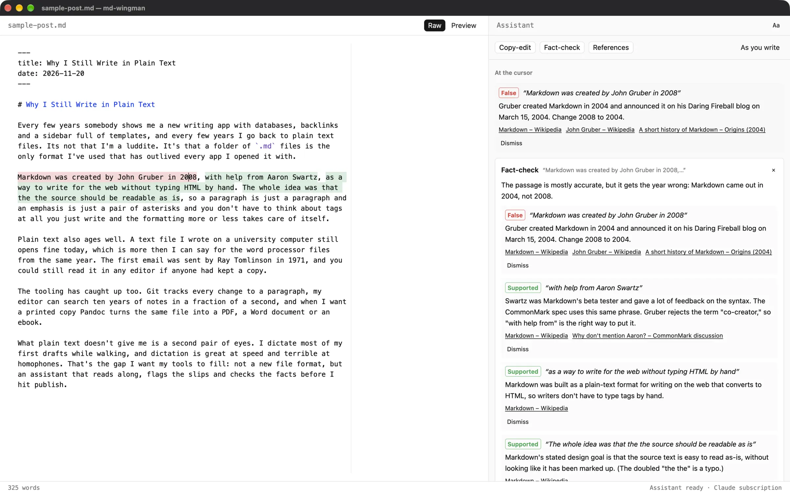
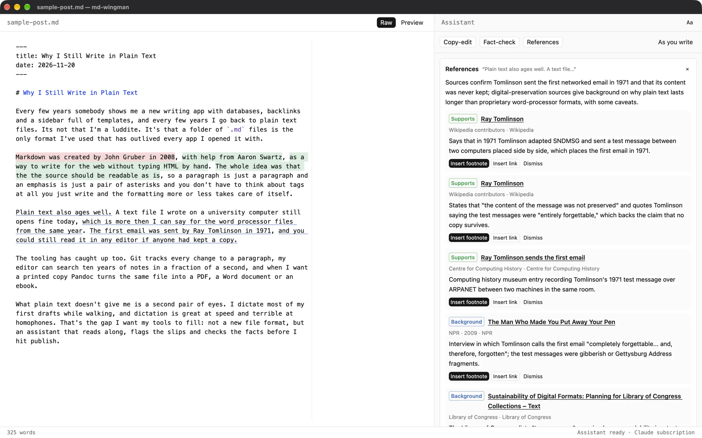
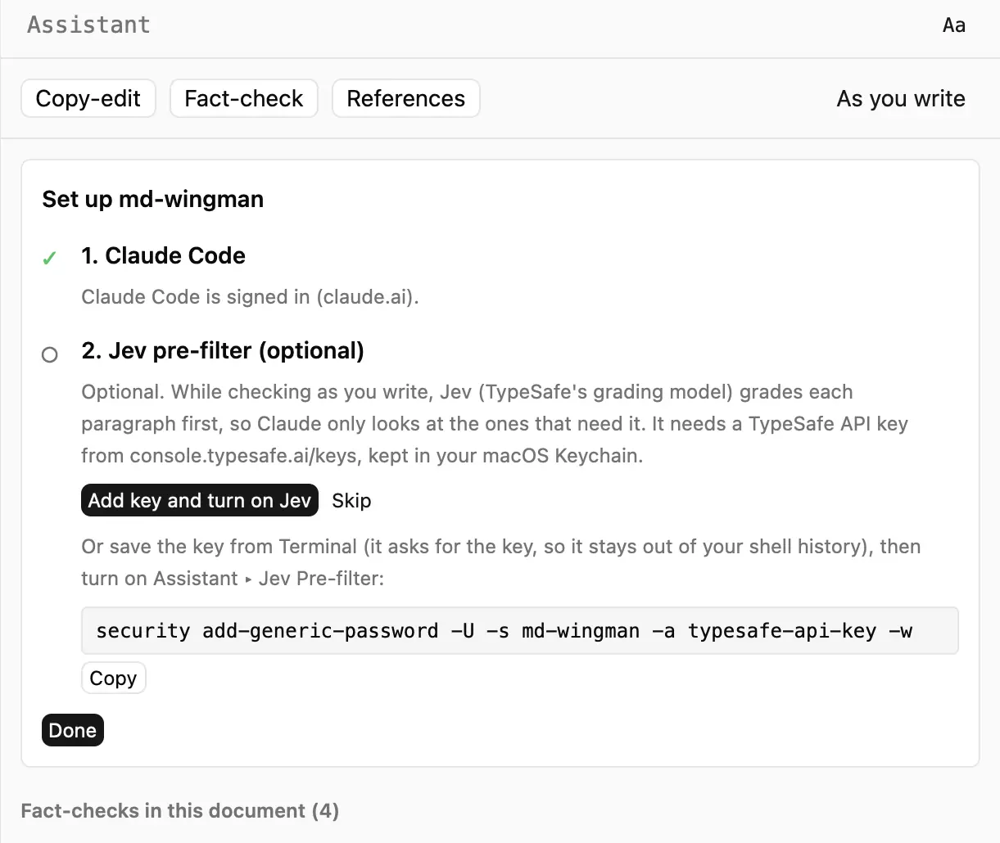

01 Write, or talk
Open a Markdown file and write, or dictate into it. The editor is plain on purpose: monospace text, a column ruler, front matter left alone. ⌘P flips to a rendered preview when you want to see the post as readers will.
$ md-wingman draft.md
A Markdown editor for macOS with an editor beside it. Claude reads along as you write and works as your copy editor, fact-checker and research editor, in the background, without ever getting in your way.

Open Claude Code in a terminal on your Mac and paste this prompt. It builds md-wingman from source on your machine, asks before installing anything, and leaves signing in to you.
Clone https://github.com/deanberris/md-wingman and build and install md-wingman on this Mac by following its AGENTS.md.
Prefer to do it yourself? See other ways to install.
I write posts for my website in Markdown, and most of the first draft is dictated. Dictation is fast and it keeps my voice, but it leaves things behind: the wrong homophone, a doubled word, a sentence that runs on, a date I was sure of and shouldn't have been.
What I wanted was what a writer at a serious publication gets: a copy editor, a fact-checker and a research editor reading over their shoulder. Not a chatbot I have to stop and ask. Not a grammar plugin that underlines everything while I'm still mid-thought. Someone who reads the draft as it comes, works quietly in the background, and has notes ready when I look over.
So md-wingman is a plain, fast Markdown editor first, with Claude beside it doing that job, on my own Claude subscription.
— Dean Michael Berris
Open a Markdown file and write, or dictate into it. The editor is plain on purpose: monospace text, a column ruler, front matter left alone. ⌘P flips to a rendered preview when you want to see the post as readers will.
Put the cursor in a paragraph and press ⌘E. Suggested edits are underlined right in the text and listed in the Assistant pane, each with a reason. Accept or dismiss them one at a time, or all at once; either way it's one step that ⌘Z takes back.
⇧⌘C checks the claims in a passage against the web. Each claim is shaded by verdict in the text, with an explanation and its sources in the pane. Click a card to jump to its claim.
⇧⌘R finds sources that back a claim, or challenge it. Cite the one you pick as a footnote, with the full citation added at the end of the post, or as an inline link.

Turn on As you write (⇧⌘K) and md-wingman checks each new or changed paragraph once you pause. It never takes the focus, never opens a dialog, never stops you mid-sentence: findings just appear by the text and in the pane. With the optional Jev pre-filter, a cheap scoring model grades each paragraph first, and Claude is only asked about the ones that need it.
When the draft is done, ⇧⌘D reviews the whole thing in the background while you keep working. Findings stay anchored to their text: edit around them and they follow it, delete the text and they go, undo and they come back.
md-wingman is early: version 0.1, macOS only, built in the open. The first time it opens, a short setup in the Assistant pane checks that Claude Code is installed and signed in, and gives you the command if it isn't.

Build it from source on your Mac (you need Rust, Bun, Xcode's command-line tools and Claude Code):
git clone https://github.com/deanberris/md-wingman
cd md-wingman
scripts/install.shUnsigned early-adopter builds are on the releases page. The README has every step.
┌──────────────────────┐ requests ┌──────────────────────┐ │ md-wingman │ ──────────▶ │ assistant service │ │ Rust · gpui │ │ Claude Agent SDK │ │ editor and sidebar │ ◀────────── │ TypeScript · Bun │ └──────────────────────┘ replies └──────────────────────┘
A native app in Rust, built with gpui, talking over a local socket to a small assistant service that ships inside the app and makes the Claude calls with the Claude Agent SDK. The architecture notes have the details.